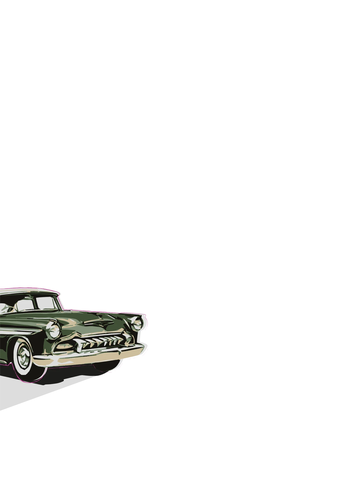
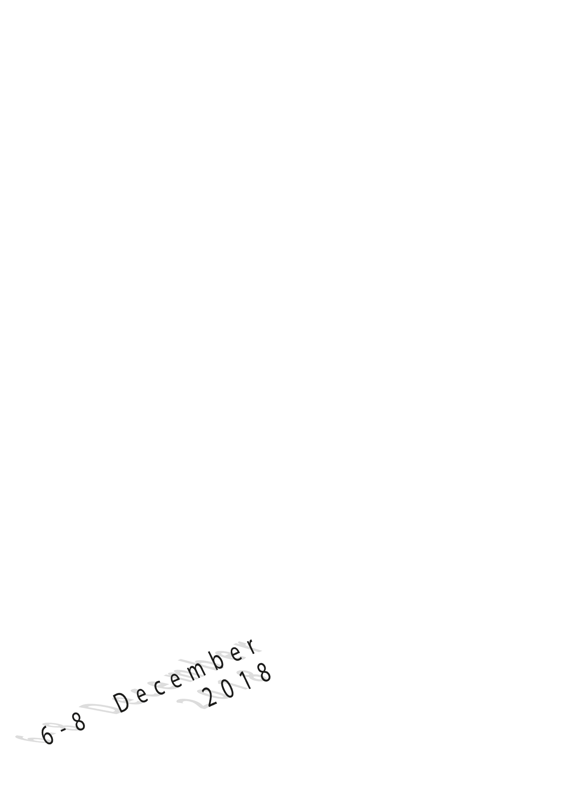
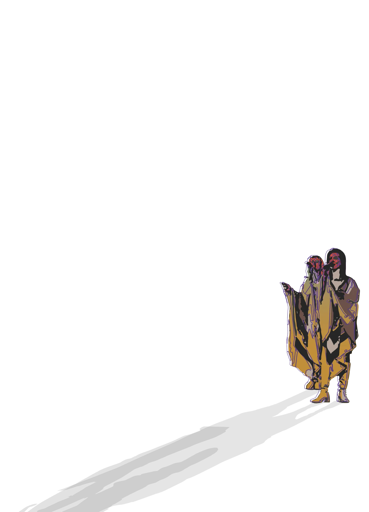
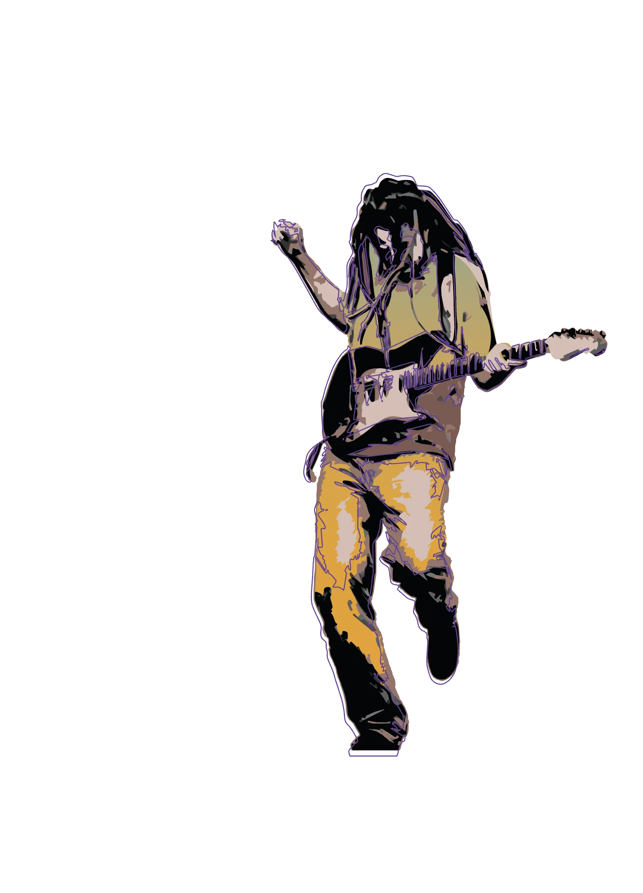
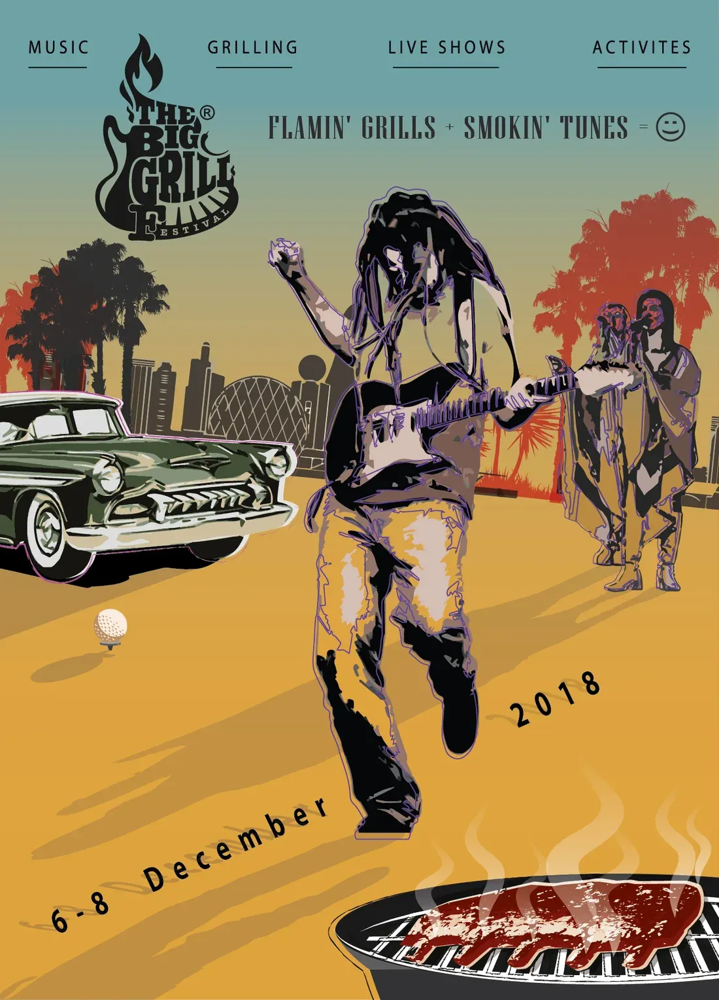
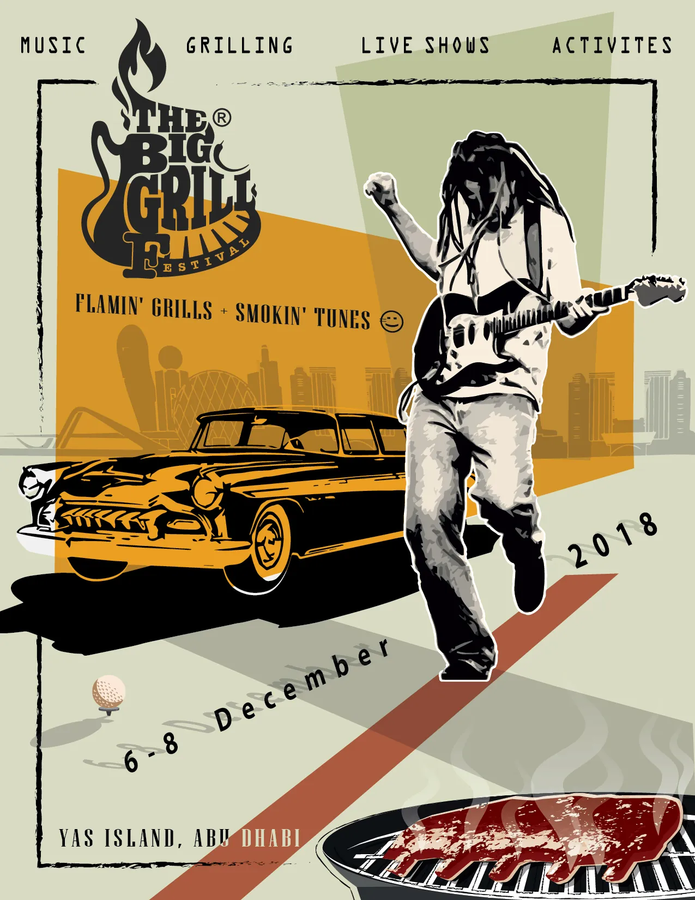
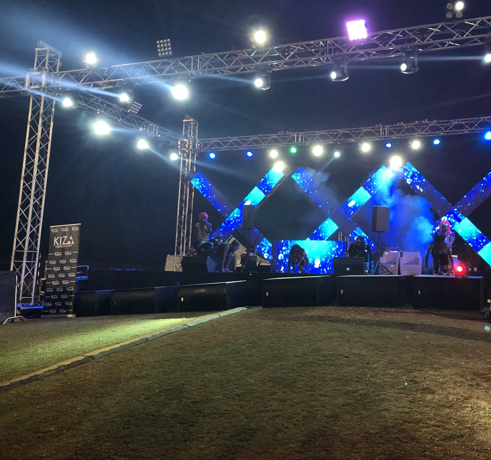
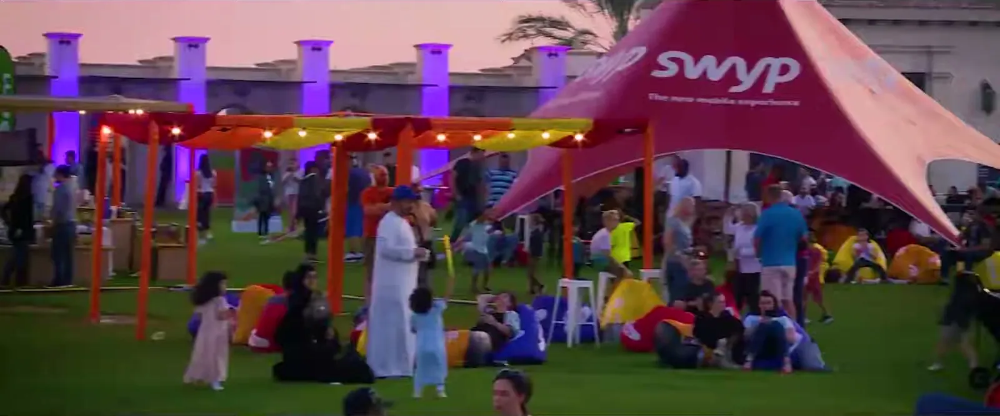
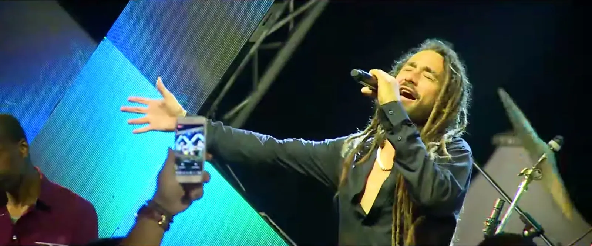

The Big Grill · Abu Dhabi · 2018
A festival starts with a drawing.
Partner and co-producer · The Big Grill poster and festival systemAntBrush · Yas Links, Abu Dhabi · 2018 · with Mission Control X
A weekend of music and grilling on a golf links. I drew it in July: a guitarist, a 1950s car, a grill, a golf ball. Then I cut it harder, on a slant, in red and in ochre. In December we stood in it.







The idea
Draw it first.
I drew the festival in July: a guitarist, a 1950s car, a grill, and a golf ball, because the lawn was a golf links. Then I cut it harder, on a slant. One last question: red, or ochre.



In December
Then we stood in it.
Three days at Yas Links, Abu Dhabi, 6 to 8 December 2018. The wedges stood at the stage, the grill was lit and the music played.



The full story
Every step, in order.
Originated with Mission Control X, who organised it. Yas Links is the venue.
See the full story